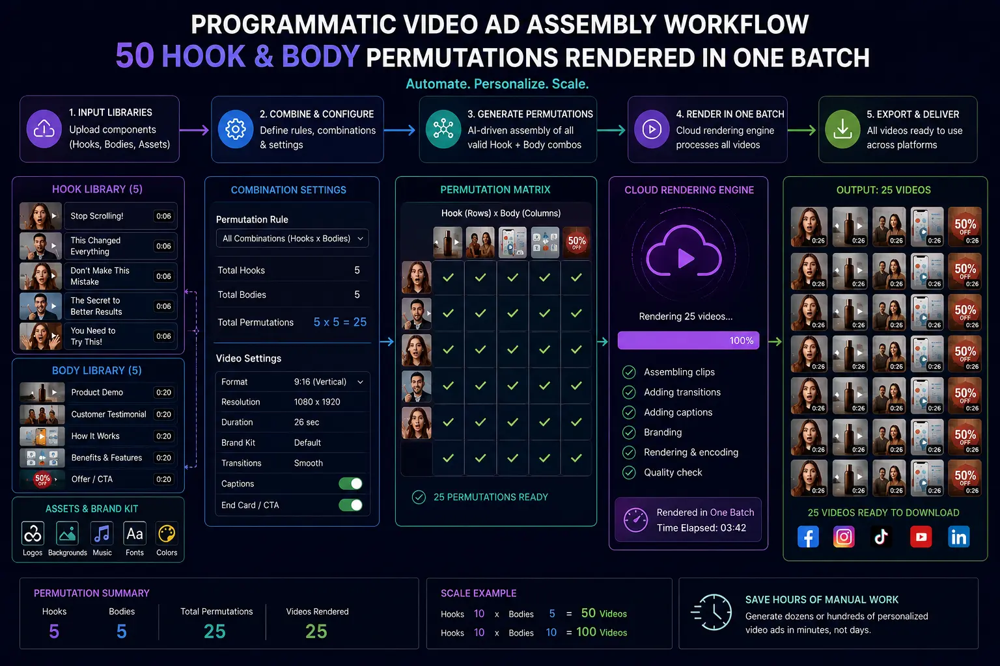
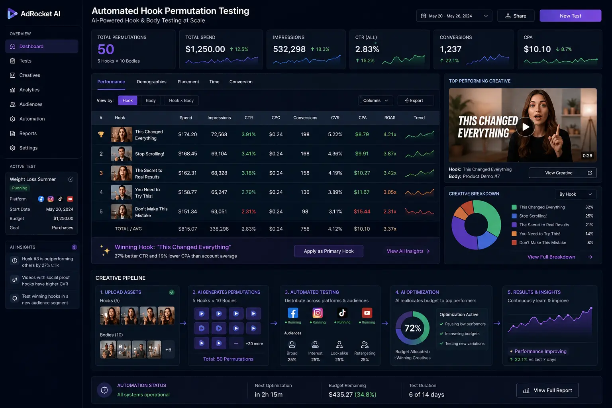

Using AI Video Builders to Export 50 Hook-and-Body Ad Permutations in One Batch
The Creative Bottleneck in Modern Performance Marketing
In the high-stakes ecosystem of direct-response paid social advertising, creative iteration is no longer a luxury—it is the single greatest determinant of ad campaign profitability. Media buyers and e-commerce growth teams running paid traffic on Meta (Facebook and Instagram), TikTok, and YouTube Shorts encounter rapid ad fatigue within days of scaling winning ad sets. When an ad creative's performance declines, manually editing new variations line-by-line in traditional video editing software creates a crippling operational bottleneck.
Historically, generating 50 distinct video ad variations required a video editor to duplicate timelines, swap out opening B-roll clips, adjust text overlays, realign audio tracks, and manually queue 50 separate renders. This labor-intensive process wasted precious days, delayed testing feedback loops, and consumed substantial creative budget. Modern performance teams have transcended this manual friction through Programmatic Video Ad Assembly and AI-driven automation workflows.
By deploying an Automated ad creative variations generator and leveraging Batch Content Video Production, brands can record modular video assets during a single shoot, feed raw components into AI video engines, and automatically render 50 unique hook-and-body ad permutations in a single batch export. This systematic approach transforms video editing from a slow artistic trade into a high-speed, data-driven revenue engine.
The Modular Architecture of Hook-and-Body Ad Permutations
At the core of dynamic creative assembly lies the principle of modular video design. Rather than conceptualizing a video ad as a monolithic 30-second linear film, modern growth editors treat each ad campaign as a set of interchangeable building blocks:
- The Hook (Seconds 0–3): The visual pattern interrupt, opening text callout, spoken statement, or sound effect designed to stop the scroll. The hook accounts for over 80% of an ad's variance in stop-rate and initial engagement.
- The Body (Seconds 3–20): The core value proposition, problem-solution narrative, product demonstration, feature breakdown, or customer social proof testimonial.
- The Call-to-Action (CTA / Ending) (Seconds 20–30): The final push detailing special discounts, free shipping offers, urgency triggers, and explicit user instructions (e.g., "Shop Now").
When you shoot 5 distinct hook variations, 3 unique body narrative angles, and 3 CTA endings, simple combinatorics dictates the output: 5 × 3 × 3 = 45 to 50 distinct video ads. Using batch editing ad hooks within programmatic software allows editors to match every hook variation against every body storyline seamlessly.
Exponential Testing Velocity
Exporting 50 ad permutations in a single rendering batch compresses weeks of manual timeline editing into minutes, enabling immediate deployment across Meta Advantage+ and TikTok Dynamic Creative feeds.
Scientific Variable Isolation
By pairing multiple hooks against identical body narratives, media buyers achieve pure Automated Hook Permutation Testing, isolating exact visual and verbal hooks that drive conversions.
Algorithmic Ad Fatigue Immunity
Plentiful creative permutations prevent audience ad fatigue by continuously supplying fresh visual hooks to platform algorithms without altering core converting messaging.
Maximum Production Asset ROI
Batch Content Video Production maximizes every hour of filming, squeezing 50 high-performing direct-response assets out of a single afternoon footage recording session.

How Programmatic Video Rendering Scripts Power AI Video Builders
Behind the seamless batch export of 50 video ad variations is the technology of programmatic video rendering scripts and cloud-based AI automation tools. Modern NLEs (like Adobe After Effects coupled with extensions like Dataclay Templater, or headless FFmpeg scripts and cloud APIs) separate creative design from visual asset data feeds.
The workflow operates in four automated stages:
- Template Rigging: Motion designers establish a master dynamic project file where video layers, text boxes, audio tracks, and color grading profiles are linked to dynamic variables.
- Data Schema Mapping: Marketers fill a CSV spreadsheet or JSON feed listing media filenames (e.g., `hook_01.mp4`, `body_03.mp4`), kinetic caption text strings, background music tracks, and brand logo overlays.
- AI Automated Assembly: An Automated ad creative variations generator reads the matrix of rows, aligns audio beats, auto-generates dynamic captions with perfect word timing, and normalizes aspect ratios (9:16 vertical, 4:5 feed, and 1:1 square).
- Headless Batch Export: The rendering script launches multi-threaded background processes, exporting 50 fully finished MP4 ad files with custom metadata tags ready for immediate ad account upload.
This integration of high-volume performance creative pipelines eliminates manual human errors such as typo bugs, misaligned text bounding boxes, audio clipping, or incorrect aspect ratio scaling.
Multi-Platform Deployment & Scaling Strategies
Once your AI video builder outputs 50 permutations, deploying them strategically across ad networks is critical to maximize return on ad spend (ROAS). Different advertising platforms require tailored delivery frameworks for batch creative variations.
Meta Advantage+ & Dynamic Creative
- Structure: Group variations into dynamic asset groups or upload 50 permutations into Advantage+ Creative campaigns.
- Objective: Allow Meta's machine learning algorithm to match specific hook variations to individual user psychographics.
- Optimization: Identify winning hooks based on 3-second thumb-stop rate and outbound click-through rate (CTR).
TikTok Spark & Organic Feeds
- Structure: Deploy high-velocity batch variations into native TikTok ad groups to combat 48-hour creative decay.
- Objective: Test native UGC-style hooks, fast jump-cuts, and trending sound triggers against identical body demos.
- Optimization: Scale winners into Spark Ads while retiring fatigued hook variations seamlessly.
YouTube Shorts & PMax Campaigns
- Structure: Feed vertical 9:16 modular ad variations into YouTube Performance Max asset groups.
- Objective: Capture high-intent scrollers through direct visual problem-solution hooks within 2 seconds.
- Optimization: Measure view-through rate (VTR) and post-click conversion rates across distinct hook angles.

Mastering Automated Hook Permutation Testing for Meta Ads
The true power of scaling Meta video ad testing lies in systematic data analysis. When running 50 ad permutations generated via Batch Content Video Production, performance marketers isolate the exact levers driving revenue.
By standardizing the body narrative (e.g., keeping Body 1 constant while rotating Hooks 1 through 10), media buyers evaluate performance metrics with surgical precision:
- Hook Stop-Rate (3-Second Video Views / Impressions): Evaluates whether the opening visual pattern interrupt successfully halts the user's scroll impulse.
- Hold Rate (ThruPlays / 3-Second Views): Measures how effectively the transition from the hook into the body content retains viewer attention.
- Outbound Click-Through Rate (CTR): Confirms whether the hook and body alignment successfully translates interest into commercial action.
- Cost Per Acquisition (CAC / CPA): The ultimate financial metric confirming profitability at scale.
When an Automated Hook Permutation Testing pipeline flags a winning hook (e.g., Hook 3 outperforming Hook 1 by 300% in stop-rate), media buyers can instantly take that winning hook, pair it with Bodies 2 and 3, and render a new batch of 50 variations—compounding ad efficiency with every iteration cycle.
Step-by-Step Blueprint: Building High-Volume Performance Creative Pipelines
Transitioning your brand or agency to a high-volume performance creative pipeline requires restructuring pre-production, filming, post-production, and media buying workflows:
- Modular Scriptwriting: Write scripts in matrix format. Formulate 5 distinct hook angles (Visual Shock, Question, Bold Claim, UGC Spoken, Unboxing), 3 core body demos (Feature Breakdown, Customer Review, Comparison), and 3 CTA offers.
- Batch Filming Days: Execute Batch Content Video Production sessions focused on capturing multiple takes of hooks and B-roll actions in rapid succession.
- Standardized File Taxonomies: Save raw footage with structured file names (e.g., `BRAND_HOOK_01_V1.mp4`) to enable programmatic software to locate and swap files automatically.
- Programmatic Rendering & Quality Assurance: Run your programmatic video rendering scripts or AI video builder software to batch export all 50 permutations, performing automated audio-peak and caption check passes.
- Automated Upload & Campaign Scaling: Push exported assets into Meta and TikTok ad accounts via API or batch uploaders, setting up automated rule triggers to scale winning combinations and sunset underperformers.
Conclusion
The era of manually editing single video ads one timeline at a time is over. Brands that rely on legacy post-production methods cannot keep pace with the relentless creative demands of modern performance marketing algorithms. By combining Batch Content Video Production, Programmatic Video Ad Assembly, and Automated Hook Permutation Testing, growth teams unlock unprecedented agility.
Utilizing an Automated ad creative variations generator powered by programmatic video rendering scripts enables media buyers to export 50 hook-and-body ad permutations in a single batch. This dynamic creative assembly workflow stabilizes acquisition costs, combats ad fatigue, and powers sustainable revenue growth across Meta, TikTok, and YouTube.
At The PhD Ads in Madurai, we specialize in building high-volume performance creative pipelines, batch editing ad hooks, and executing scaling Meta video ad testing frameworks for ambitious e-commerce and direct-to-consumer brands. Let us turn your creative production into a high-speed engine for revenue growth.
Key Topics
Ready to Scale Meta Ad Performance with Programmatic Video Assembly?
At The PhD Ads in Madurai, we specialize in batch content video production, programmatic video ad assembly, and high-volume performance creative pipelines to help e-commerce brands and media buyers rapidly scale winning ad variations across Meta and TikTok.
Email: team@e2o.in